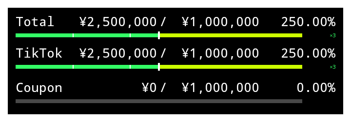
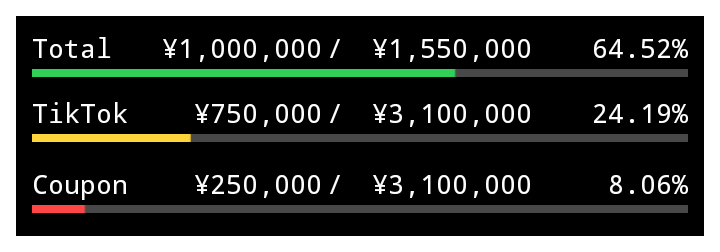
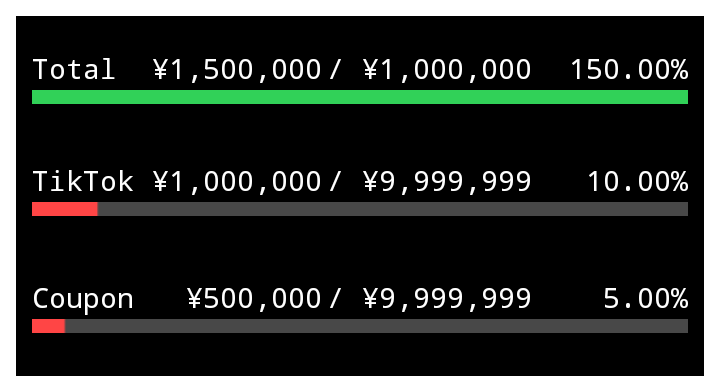
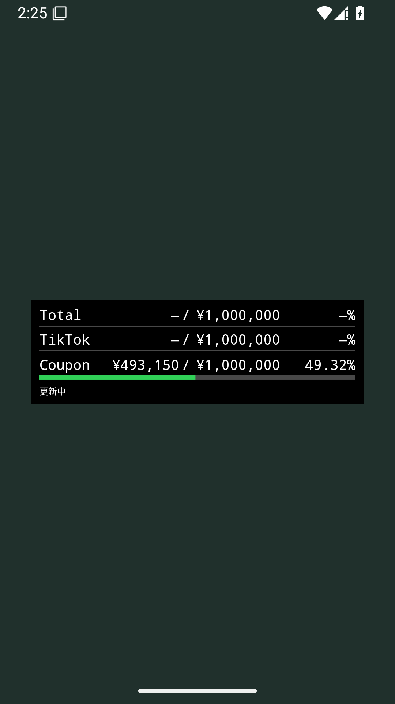

収益を、
ホーム画面に。
Total・TikTok・Couponを縦3行で表示。標準テキスト部品で、現在額・「／」・目標額を独立した固定幅に表示。画像縮小による文字の縮みを防ぎ、足りない桁は空白の幅を保ちます。カード・3行・ゲージの太さはサイズ変更に追従。枠線はありません。文字は欄に収まる範囲で拡大し、更新日時は表示しません。表示は0.1.4の配置を維持し、今日までの目標に対する進歩でゲージ色が緑・黄・赤へ変わります。v0.1.13は2周目・3周目以降も色を交互に重ねる多周回ゲージに対応。前周を満タンに保ち、現在周の進み具合を重ねます。188.59%は2周目88.59%、250%は3周目50%、300%ちょうどは3周目満タンです。金額と達成率は累計のまま。境界には白線、右端には「×2」「×3」などの周回数を表示します。達成・未達・不足・2周目の4色は色見本またはカラーコードで変更でき、保存済みの色を維持します。修正版は周回数の文字高さと右端の34dp欄を維持し、20・40・60・80%の目盛り文字を削除しました。目盛り線は残し、進捗境界は従来の白い縦線「|」へ戻しました。新規設定の既定色は1周目 #33FF66、2周目 #CCFF00です。前面の更新フロートは引き続き非表示です。タップすると設定画面と同じ方法で取得を始め、ウィジェット内だけに小さく「更新中」を表示します。

初回新版v0.1.13のAndroid 35表示テスト画像です。今回修正版は途中の目盛り文字を削除し、境界はこの画像と同じ白い縦線を使用します。数値は検証用で、実収益ではありません。

Android 35で描画したテスト画像です。数値は表示検証用で、実収益ではありません。
高さを広げたときの表示

同じ横幅で高さを変更したAndroid表示テスト。文字は固定欄に収まる上限で止まり、行間とゲージの太さは枠の高さに合わせて変わります。ゲージ内の目標額表示は外し、0.1.4の太さへ戻しています。
フロートのないタップ更新

Android 35の検証画面です。更新中もホームの操作を妨げない構成です。検証用の未連携状態を含みます。
Couponは既存の中央台帳から自動取得します。TikTokと目標は、THE FOOL QUESTから一度連携してください。サイトで値を変更したら再連携が必要です。
インストールして配置
- AndroidでAPKをダウンロードして開きます。必要な場合は、そのブラウザの「不明なアプリのインストール」を許可します。
- 「FOOL QUEST ウィジェット 新版」を開き、「THE FOOL QUESTから連携」を選びます。普段使うサイトと同じブラウザで開き、表示値を確認して「アプリへ連携」を押します。
- アプリ側で値を確認して「受け取る」を押します。背景・文字などを調整し、「設定を保存」を押します。
- 「ホーム画面に追加」を押します。対応していない場合は、ホーム画面を長押しして「ウィジェット」から選びます。
連携ページの「新版アプリへ連携」を押すと新版が開きます。旧版もインストールされていても、新版を指定して連携します。連携画面が開いたら、サイトのTikTok金額・目標との一致を確認してください。未連携の項目は「—」になります。
毎日の操作
| タップ | Coupon取得を開始し、ウィジェット内だけに「更新中」を表示。前面フロートはありません。通信中の連続操作は同じ取得の完了を待ちます。 |
| 自動更新 | 30分間隔。省電力中は遅れる場合があります。 |
| 長押し | サイズ変更。カード背景と3行の配置、ゲージの太さが枠の高さに合わせて変わります。文字は固定欄に収まる上限まで拡大します。設定メニューの有無はホームアプリによります。 |
| 表示設定 | 黒／白、色、透過率、文字サイズ、四方向余白、行間、ゲージの基準太さと色。 |
| 進歩カラー | 今日までの目標に対して100%以上＝達成色（既定：緑）、50%以上100%未満＝未達色（黄）、50%未満＝不足色（赤）。達成・未達・不足・2周目の4色はそれぞれ変更できます。目標は月間目標×日本時間の日付÷当月の日数。収益・目標不明や古い月は灰色。ゲージの長さと％は月間達成率です。表示設定でOFFにすると保存済みの固定色を使用します。 |
| 通信失敗 | 前回の正常取得値を保持。時間切れ・未接続・サーバー応答などの理由を表示します。アプリの設定画面では復旧後も直近の失敗理由を確認できます。 |
確認状況
v0.1.13 / code 14を維持し、進捗境界だけ従来の白い縦線へ戻した修正版です。同じ新版パッケージと正式署名を使用し、APKの版・署名・ハッシュを確認済みです。今回のAndroid 35検証は描画3388件・通信断123件・再起動113件に合格。前公開「］」APKからの上書き更新で同一UIDと設定・キャッシュ・通信履歴29項目を保持。両配布先の公開後再取得は反映後に確認します。Nova実機での受入は未確認です。
APKの照合情報
SHA-256
5ab426a1dcf8f3673651b99bd69a39bb74053287fa3d7cf2829c296cdda0650f
署名証明書 SHA-256
8495f4b4b508ca5b24c2b7fd714b21963f5b1c0275659f434e3e0d9e239c6730